Papírové tašky
Tisky je možné realizovat na bílý i hnědý materiál.
Papírové, LDPE tašky a textilní jsou v podstatě vysoce účinnou reklamou pro vaši obchodní činnost, s nepřeberným množstvím využití v jednotlivých oborech podnikání jako například:
- Obchodní společnosti - móda, potraviny, doplňky stravy atd.
- Prodejní řetězce všeho druhu – potraviny, stavebnictví, elektro atd.
- Obory - farmacie, lékárny, optiky
- dále např. veřejné instituce, potraviny, řeznictví, pekařství, stavební společnosti, autoprůmysl - autosalony, cestovní kanceláře, logistické společnosti, finanční instituce, gastronomie atd.
Papírové tašky - plochá ucha
|
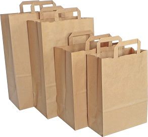
tašky z hnědého materiálu Kraft, Gr. 70g - 80g/m2
- 180* 90*230 mm - 250 ks kartón - 220*110*245 mm - 250 ks kartón - 260*140*300 mm - 350 ks kartón - 305*170*430 mm - 200 ks kartón - 320*220*245 mm - 250 ks kartón |
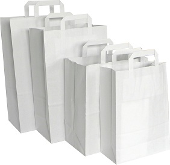
tašky z bílého materiálu Kraft, Gr. 70g – 80g/m2
- 180* 90*230 mm - 250 ks kartón - 220*110*245 mm - 250 ks kartón - 260*140*300 mm - 350 ks kartón - 305*170*430 mm - 430 ks kartón - 320*220*245 mm - 250 ks kartón
|
Papírové tašky - kroucená ucha (Twister)
|
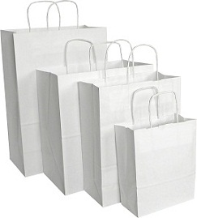
tašky z bílého materiálu Kraft, Gr. 90g - 100g/m2
- 180* 80*230 mm - 400 ks kartón - 188* 80*390 mm - 400 ks kartón - 240*100*320 mm - 250 ks kartón - 305*170*340 mm - 100 ks kartón - 305*170*445 mm - 100 ks kartón - 330*120*500 mm - 100 ks kartón - 400*180*390 mm - 100 ks kartón - 350*180*440 mm - 100 ks kartón - 450*170*480 mm - 100 ks kartón - 500*180*390 mm - 100 ks kartón |
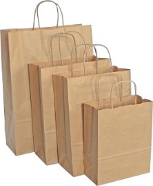
tašky z hnědého materiálu Kraft, Gr. 90g - 100g/m2
- 180* 80*230 mm - 400 ks kartón - 188* 80*390 mm - 400 ks kartón - 240*100*320 mm - 250 ks kartón - 305*170*340 mm - 100 ks kartón - 305*170*445 mm - 100 ks kartón - 330*120*500 mm - 100 ks kartón - 400*180*390 mm - 100 ks kartón - 350*180*440 mm - 100 ks kartón - 450*170*480 mm - 100 ks kartón - 500*180*390 mm - 100 ks kartón |
Papírové tašky barevné - kroucená ucha
tašky jsou vyrobeny z materiálu Kraf Gr. - 100 g/m2. Barevný potisk na 100% povrchu.
Barvy – bordó, červená, hnědá, černá, oranžová, modrá, tmavě zelená, bílá, světle zelená, žlutá
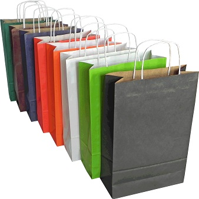
Rozměry:
- 240*100*360 mm - 250 ks kartón
- 305*170*340 mm - 100 ks kartón
- 305*170*445 mm - 100 ks kartón
- 400*180*390 mm - 100 ks kartón
Slevy a ceny potisku dle kalkulace.
Papírové tašky na láhve
tašky jsou vyrobeny z papíru, gr. 110 - 130 g/m2, úchyt je šňůrový.
Barvy – bílá, hnědá, černá, modrá, zelená
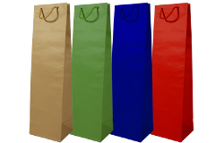
Rozměry:
- 110*90*400 mm - 300 ks kartón
hnědá
bílá
barevná
Slevy a ceny potisku dle kalkulace.
Na všechny typy tašek realizujeme potisky dle přání zákazníka.
Luxusní papírové tašky Prestige s lesklým laminem
tašky jsou vyrobeny z papíru o gramáži - 170g/m2, zušlechtěné lesklým laminem, úchyt je šnůrový.
Barvy – bílá, bordó, černá, tmavě modrá

Rozměry:
- 200* 80*280 mm - 100 ks kartón
- 240* 80*320 mm - 100 ks kartón
- 390*100*430 mm - 100 ks kartón
Luxusní papírové tašky Prestige bez lamina
tašky jsou vyrobené z papíru o gramáži 110g/m2, uchýt je šnůrový.
Barvy – bílá, hnědá, černá, modrá, tmavě zelená

Rozměry:
- 170* 70*250 mm - 300 ks kartón
- 240*100*320 mm - 300 ks kartón
- 300*100*400 mm - 300 ks kartón
Látkové tašky
tašky z netkané textilie
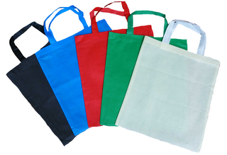
tašky jsou vyrobené z polypropylénu, gr. 100.
Barvy - černá zelená,červená, fialová, světle modrá, žlutá, oranžová
Rozměry:
- 350*400 mm, délka ucha 230 mm
- 350*400 mm, délka ucha 600 mm
- 300*150*350 mm, délka ucha 230 mm
Bavlněná látková taška
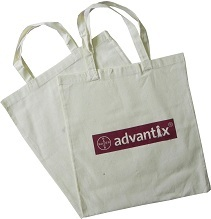
Taška vyrobená z ekologické bavlny gr. 140.
380*420 mm, délka ucha 350 mm
380*420 mm, délka ucha 700 mm
380*420 mm, délka ucha 700 mm
Přírodní odstín.
tašky s motivy
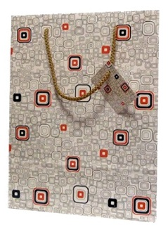 
Rozměry:
- 90*70*320 mm
- 110*90*400 mm
- 170*70*270 mm
- 240*90*310 mm
- 240*90*400 mm
- 380*100*360 mm
LDEP (igelitové) tašky
Reklamní LDPE (igelitové) tašky s potiskem
Typ – 1 reklamní LDPE taška se zpevněným průhmatem a složeným dnem, tloušťka - 0,055 mm
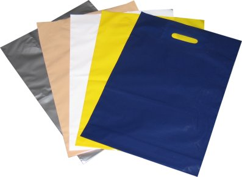
- 350*460 mm - bílá, tloušťka - 0,055 mm
- 350*500 mm - bílá, tloušťka - 0,055 mm
- 350*500 mm - světle modrá, černá, hnědá, zelená, žlutá, červená, stříbrná, béžová, tmavě modrá
- 650*550 mm - bílá, černá, žlutá, stříbrná, tmavě modrá, červená - tloušťka - 0,060 mm
Typ – 2 reklamní LDPE taška s páskovým držadlem a složeným dnem, tloušťka - 0,055 mm
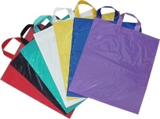
- 400*460 mm bílé, černá, žlutá, stříbrná, tmavě modrá, červená
Typ - 3 reklamní LDPE taška s nezpevněným průhmatem, tloušťka - 0,055 mm
- 150*200 mm - bílá, černá, žlutá, stříbrná, tmavě modrá
- 200*300 mm - bílá, světle modrá, černá, hnědá
- 200*300 mm - žlutá, červená, stříbrná, tmavě modrá
Barevné odstíny fólií přibližně odpovídají vzorníku Pantone:
- světle modrá P 2925
- tmavě modrá P 295
- hnědá P 4625
- červená P 485
- béžová P 721
- žlutá P 116
- zelená P 355
Na všechny typy tašek realizujeme potisky dle přání zákazníka.